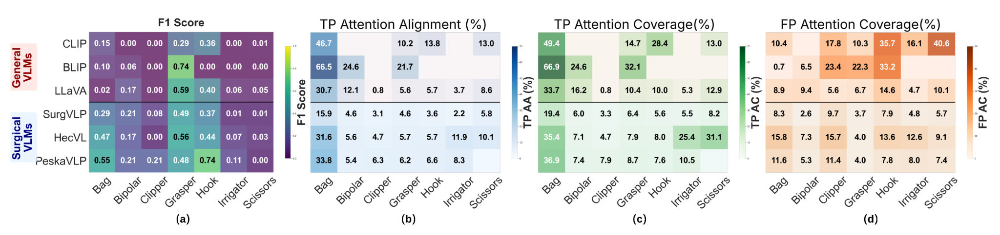
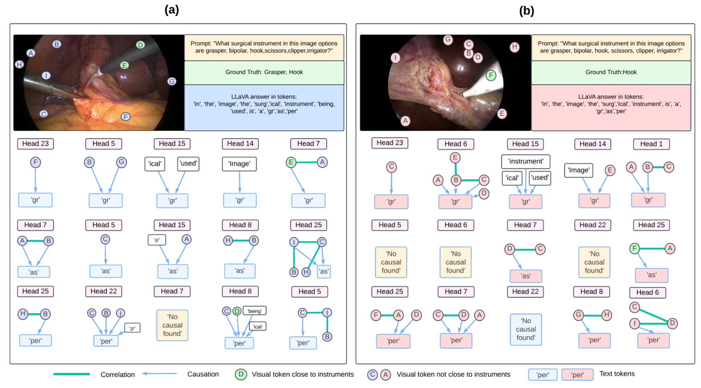

Innovations in digital intelligence are transforming robotic surgery with more informed decision-making. Real-time awareness of surgical instrument presence and actions (e.g., cutting tissue) is essential for such systems. Yet, despite decades of research, most machine learning models for this task are trained on small datasets and still struggle to generalize. Recently, Vision-Language Models (VLMs) have brought transformative advances in reasoning across visual and textual modalities. Their unprecedented generalization capabilities suggest great potential for advancing intelligent robotic surgery. However, surgical VLMs remain under-explored, and existing models show limited performance, highlighting the need for benchmark studies to assess their capabilities and limitations and to inform future development. To this end, we benchmark the zero-shot performance of several advanced VLMs on two public robotic-assisted laparoscopic datasets for instrument and action classification. Beyond standard evaluation, we integrate explainable AI to visualize VLM attention and uncover causal explanations behind their predictions. This provides a previously underexplored perspective in this field for evaluating the reliability of model predictions. We also propose several explainability analysis-based metrics to complement standard evaluations. Our analysis reveals that surgical VLMs, despite domain-specific training, often rely on weak contextual cues rather than clinically relevant visual evidence, highlighting the need for stronger visual and reasoning supervision in surgical applications.